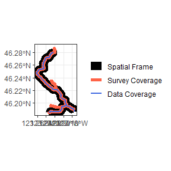
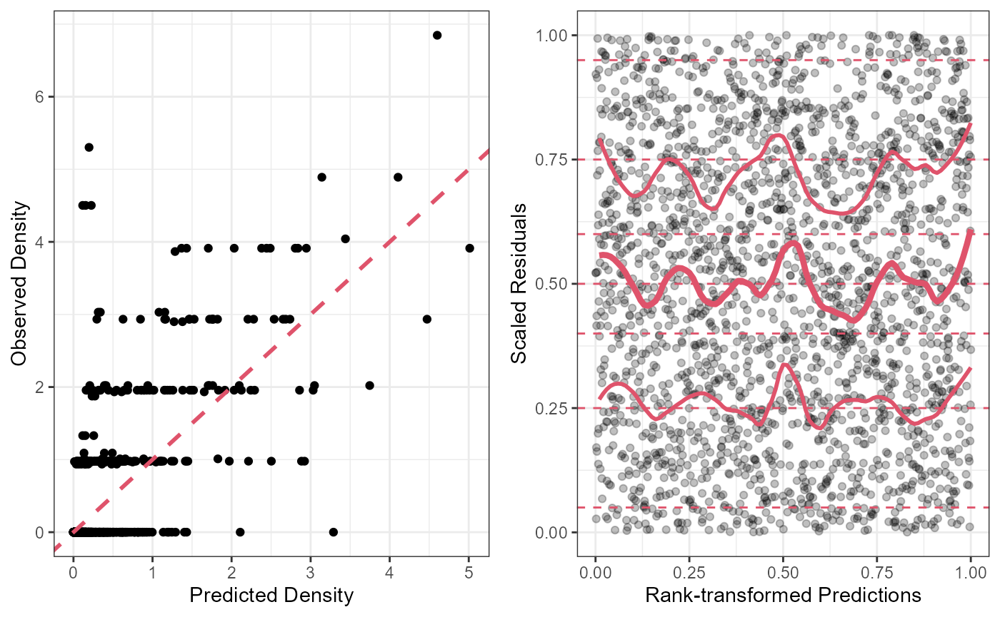

Fitting a VAST Model
model_fitting.Rmd
library(StreamVAST)
library(tinyVAST)
#> ###########################################################################################
#> Loading package tinyVAST version 0.7.0
#> This package is under development, and the interface may change at any time
#> The authors hope to establish a stable interface by end of 2024
#> ###########################################################################################
library(sf)
#> Linking to GEOS 3.11.2, GDAL 3.8.2, PROJ 9.3.1; sf_use_s2() is TRUE
library(ggplot2)
library(sfnetworks)
library(gridExtra)Fitting a tinyVAST Model to Stream Network Data
This is the second chapter explaining how to use the functions in the StreamVAST package. For information on how to prepare and format data, please refer to the previous chapter Preparing a Stream Network
In the previous chapter, we imported data for steelhead salmon redds in the Mill Creek watershed, in Washington State. The two most important data objects are a data frame with the dates and locations of redds, and an sf object with LINESTRINGS defining the different segments of the network.
head(Mill.data)
#> Year Day Reach Effort Redds habitat STRM_NAME root parent
#> 1 2013 64 1 0.7515168 0 TRUE Mill Creek TRUE NA
#> 2 2013 64 2 1.0667105 0 TRUE Mill Creek FALSE 1
#> 3 2013 64 3 1.0224078 0 TRUE Mill Creek FALSE 2
#> 4 2013 64 4 1.0224078 0 TRUE Mill Creek FALSE 3
#> 5 2013 78 1 0.7515168 0 TRUE Mill Creek TRUE NA
#> 6 2013 78 2 1.0667105 0 TRUE Mill Creek FALSE 1
print(Mill.reaches,n = 4)
#> Simple feature collection with 22 features and 7 fields
#> Geometry type: LINESTRING
#> Dimension: XY
#> Bounding box: xmin: 941970.7 ymin: 322499 xmax: 963147.4 ymax: 357159.5
#> Projected CRS: NAD83 / Washington South (ftUS)
#> First 4 features:
#> from to habitat Reach STRM_NAME root parent geometry
#> 1 1 2 1 1 Mill Creek 1 NA LINESTRING (963147.4 322499...
#> 2 2 3 1 2 Mill Creek 0 1 LINESTRING (961311.9 324437...
#> 3 3 4 1 3 Mill Creek 0 2 LINESTRING (958655.6 326211...
#> 4 4 5 1 4 Mill Creek 0 3 LINESTRING (958123.2 328790...Additional formatting for tinyVAST
There are a few more minor formatting tasks that need to be completed before we can fit a model. We need to draw information from Mill.reaches to add an “Area” column that tracks the total area in each reach, separate from the “Effort”. The date will also be converted into a variety of formats (statistical week, Month) that will be useful later. The objects are returned with additional formating as a streamvast class object. This object has numerous elements that will be gradually filled in using additional functions. This function also produces a map of the spatial frame and the data coverage provided by the surveys that can be useful as a diagnostic check.
Mill.vast<-ConstructStreamVAST(countdata = Mill.data,reachdata = Mill.reaches,surveydata = Mill.surveys,reachname = "Reach",countname = "Redds")
#> [1] "Initializing StreamVAST based on countdata and reachdata"
This will produce a “streamvast” object, which is a list with many components. The inital data inputs “countdata”, “reachdata”, and “surveydata” are located here. Of particular note, is the “reachname” argument. The reachname is used as a key to unify different components, and must be consistent across all the datasets that feed into the process. The streamvast class also has a variety of slots reserved for the model and model outputs that are likely to be useful at later steps.
Choosing a temporal resolution
Depending on the system being modeled, a variety of temporal resolutions are possible. The second step is to define the temporal resolution, which will determine the overall structure of the vast model and predictions. Use the function “SetTemporalFrame” For this example, we will set the temporal resolution to Year, and will cover the 6 months from Jan to June. We will also pad the ends of the data set with zeros, to mark the ends of the season. The season argument is used to define the time period being modeled beyond the start and end year. It is always an integer vector of the form c(starting month, starting day, ending month, ending day). In the example below, the season is defined from Jan. 1, to June 30. It is possible to construct seasons that run past Dec 31 using this argument.
Mill.vast<-SetTemporalFrame(streamvast = Mill.vast,Time = "Year",season = c(1,1,6,30),
startdate = "2013-01-01",enddate = "2022-06-30",padyear = T)This function fills in several slots of the Mill.vast object. Reference data for the temporal structure is located in the “timetable” slot. Based on the settings, the table will include a “Runyear” which may be different from the calendar year, start and end dates for each run, a generic “Time” column that matches the order of each period and is useful if you intend to use timescale smaller than one year. The “Day” column that refers to the julian calendar day of the year, and a “Statday” column that indicates how many days since the start of the season.
Some other important features are “vastnetwork”, which contains the network settings used internally by tinyVAST, and typically should not be altered.
Last the “vastdata” slot contains the data frame that will be passed to tinyVAST when fitting the model. The observations from countdata have been matched to the “timetable” slot and now include Runyear and Statday as well. Lon/Lat coordinates have also been added. For now, StreamVAST is not compatible with multi-species models, though that functionality is expected in the future. The Species and Distribution columns are fixed for the moment. Note, that because we set the padyear option to TRUE, zero observations are added at the start and end of the season, which is useful for many salmonid studies.
head(Mill.vast$vastdata)
#> Time Runyear Date Year Month Day Statday Reach Species Dist Redds
#> 1 1 2013 2013-03-05 2013 3 5 64 1 Redds obs 0
#> 2 1 2013 2013-03-05 2013 3 5 64 2 Redds obs 0
#> 3 1 2013 2013-03-05 2013 3 5 64 3 Redds obs 0
#> 4 1 2013 2013-03-05 2013 3 5 64 4 Redds obs 0
#> 5 1 2013 2013-03-19 2013 3 19 78 1 Redds obs 0
#> 6 1 2013 2013-03-19 2013 3 19 78 2 Redds obs 0
#> Density Length Effort Lat Lon Original
#> 1 0 1.065629 0.7515168 46.19086 -123.1760 TRUE
#> 2 0 1.064799 1.0667105 46.19420 -123.1866 TRUE
#> 3 0 1.021654 1.0224078 46.19933 -123.1954 TRUE
#> 4 0 1.020937 1.0224078 46.20602 -123.1992 TRUE
#> 5 0 1.065629 0.7515168 46.19086 -123.1760 TRUE
#> 6 0 1.064799 1.0667105 46.19420 -123.1866 TRUEThe second element of the list is a table that is useful for relating the time period back to it’s normal calendar date.
head(Mill.vast$timetable)
#> Runyear Year Start Date End Time Month Day Statday Observed
#> 1 2013 2013 2013-01-01 2013-04-01 2013-06-30 1 4 91 91 TRUE
#> 2 2014 2014 2014-01-01 2014-04-01 2014-06-30 2 4 91 91 TRUE
#> 3 2015 2015 2015-01-01 2015-04-01 2015-06-30 3 4 91 91 TRUE
#> 4 2016 2016 2016-01-01 2016-03-31 2016-06-30 4 3 91 92 TRUE
#> 5 2017 2017 2017-01-01 2017-04-01 2017-06-30 5 4 91 91 TRUE
#> 6 2018 2018 2018-01-01 2018-04-01 2018-06-30 6 4 91 91 TRUECovariates
Our example does not use covariates, but they can be added to the “vastdata” component with ease. Depending on the structure of your covariate data, it can be matched to the date, lat/lon coordinates, reach identifier, or any combination of these. The functions covered in the previous chapter can be helpful. For instance, the AttachData function can be used to map covariate values from a different shapefile onto the network structure in “reachdata”, and then use the reach numbers to match to vastdata.
An example in tinyVAST
The model can be fit using the tinyVAST function. There are many options, but the below can serve as an example. The formula section can include a variety of fixed or random effects and uses the same syntax as mgcv for fitting splines. In this case, we will fit a spline for Statday, which represents our seasonal (intra-annual) patterns, and an offset for survey effort.
TinyVAST uses a structural equation modeling framework for specifying various effects, and users are advised to read more about it for specifics. Specifying “sem = ’’”, uses the default spatial effects for a stream network, where counts at each location are correlated by distance with an exponential decay (Ornstein-Ulhenbeck process, see tinyVAST documentation). The “dsem” argument is used to specify spatio-temporal interactions, and in case we have added a 1 year lag to the default effects.
fit<- tinyVAST( data = Mill.vast$vastdata,
formula = Redds ~ 1 + s(Statday) + offset(log(Effort)),
spatial_graph = Mill.vast$vastnetwork,
space_columns = c("Lon","Lat"),
variable_column = "Species",
time_column = "Runyear",
distribution_column = "Dist",
sem="",
dsem = "Redds -> Redds, 1, rho",
family=poisson(),
control = tinyVASTcontrol(getJointPrecision = TRUE))Preliminary checks and Troubleshooting
The outputs of the model can be accessed from fit, several of which are useful to determine if the algorithm has run successfully. It is good to check that the Hessian is positive-definite.
fit$sdrep$pdHess
#> [1] TRUEIt is also wise to look at the component loadings and check that they have reasonable Std. Errors. In the table, alpha terms refer to fixed effects, log_lambda terms refer to splines, beta terms refer to spatial effect, and theta refers to the spatio-temporal effect. Log_kappa is the term for the decorrelation distance in the spatial and spatio-temporal effects.
fit$sdrep
#> sdreport(.) result
#> Estimate Std. Error
#> alpha_j -5.1040345 0.8766787
#> beta_z 0.6949493 0.1743692
#> beta_z 1.0126676 0.1854858
#> theta_z 1.3674885 0.5216452
#> log_lambda -3.2266104 0.7168398
#> log_kappa -1.0713416 0.6030238
#> Maximum gradient component: 5.023135e-05Consider removing terms that are poorly estimated, or else adjust the model structure until you are satisfied with the results. When ready to proceed, add the model to the streamvast object.
Mill.vast$vastmodel<-fitThe predictions from the fitted tinyVAST model can be quickly extracted using a helper function VASTpreds. This function will format the predictions into several data frames, and provide the density and count estimates for each reach at each time period. It also provides upper and lower 95% confidence bounds, based on samples drawn from the posterior distribution. If desired, it can also produce area under the curve estimates useful for many salmonids (note, not AUC as in the AUROC statistic for classification success). Users can also specify the number of simulated draws to make for estimating confidence intervals. A bias correction option exists for removing the transformation bias associated with drawing normal samples from the posterior of a poisson distrubtion, but it is computationally expensive and time consuming. Users can also supply a newdata argument if predictions at a specific points are desired, though the predict function can also be used on fit for a similar effect.
Mill.vast<-VASTpreds(streamvast = Mill.vast,makeauc = T,nsims = 100,bias.correct = F)This function will have filled in many of the remaining components in the streamvast object. The “stats” component has some summary stats. By default, the “preds” component will contain estimates scaled to full survey effort, and reflects the best estimate of density for each reach at each time. The “eval” componenet contains fitted values matched to observed survey effort, and is useful for evaluating residuals. Spacedata and timedata provide average estimates by time or space. Aucdata is a list that contains area under the curve estimates for each reach and year, as well as totals by year. The “sims” component contains simulated counts of several types based on the posterior draws.
It’s always a good idea to plot your residuals. Tinyvast models are also compatible with the DHARMa package to make useful plots for assessing problems. A helper function makes it easier
resplot<-ggplot(data=Mill.vast$eval)+
geom_point(aes(x=fit_Density,y=Density))+
geom_abline(slope = 1,intercept = 0,col=2,linetype=2,linewidth=1)+
theme_bw()+xlab("Predicted Density")+ylab("Observed Density")
dharmaplot<-Dharmaplot(Mill.vast,span = .2)
grid.arrange(resplot,dharmaplot,ncol=2)
Looks ok!
A second functon can produce maps from the output.
plotPredictionMap(streamvast = Mill.vast,mapvar = "pred_Density")
These maps can also be faceted by year, month, etc.
plotPredictionMap(streamvast =Mill.vast, subset=Mill.vast$preds$Year%in%c(2014,2016,2018,2020), mapvar="pred_Density",facet = "Year",make.labels = F,xaxis.breaks = NA,yaxis.breaks = NA)
Additional maps can be easily generated using generic plotting functions. For instance, the average density with respect to space is stored under the “spacedata” slot.
ggplot(data=Mill.vast$spacedata)+
geom_point(aes(x=Reach,y=Density))+ggtitle("Mill Creek - Average Density by Reach")+
geom_line(aes(x=Reach,y=pred_Density))+
geom_line(aes(x=Reach,y=pred_Density_upper),linetype=3)+
geom_line(aes(x=Reach,y=pred_Density_lower),linetype=3)+theme_bw()
Similarly, the pattern over time is stored in “timedata.”
year.breaks<-aggregate(Mill.vast$timedata$Dayseq,by=list(Mill.vast$timedata$Year),FUN=min)
ggplot(data=Mill.vast$timedata)+
geom_point(aes(x=Dayseq,y=Density))+ggtitle("MAG - Average Density by Reach")+
geom_line(aes(x=Dayseq,y=pred_Density))+
geom_line(aes(x=Dayseq,y=pred_Density_upper),linetype=3)+
geom_line(aes(x=Dayseq,y=pred_Density_lower),linetype=3)+theme_bw()+
scale_x_continuous(breaks = year.breaks$x,labels = year.breaks$Group.1)
The easiest way to save a fitted model is as an RDS object.
In the next chapter, we will discuss some additions and extensions of this model that can be used to generate escapement estimates for salmonid populations in the Pacific Northwest.